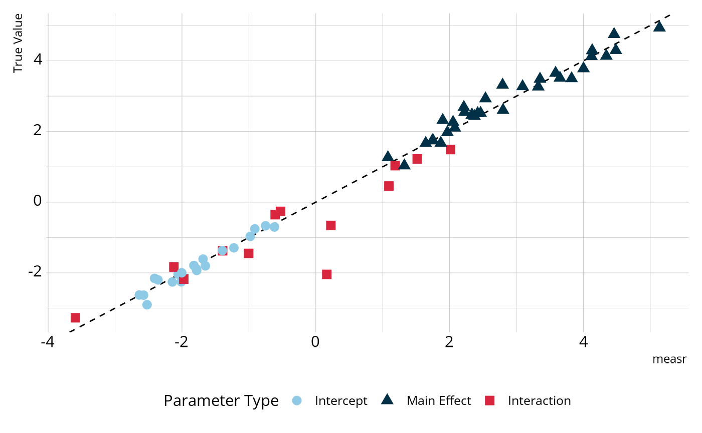

Estimating diagnostic classification models
Source:vignettes/articles/model-estimation.Rmd
model-estimation.RmdIn this article, we will walk you through the steps for estimating diagnostic classification models (DCMs; also known as cognitive diagnostic models [CDMs]) using measr. We start with the data to analyze, understand how to specify a DCM to estimate, and learn how to customize the model estimation process (e.g., prior distributions).
To use the code in this article, you will need to install and load the measr package.
Example Data
To demonstrate the model estimation functionality of measr, we’ll examine a simulated data set. This data set contains 2,000 respondents and 20 items that measure a total of 4 attributes, but no item measures more than 2 attributes. The data was generated from the loglinear cognitive diagnostic model (LCDM), which is a general model that subsumes many other DCM subtypes (Henson et al., 2009). By using a simulated data set, we can compare the parameter estimates from measr to the true data generating parameters.
library(tidyverse)
sim_data <- read_rds("data/simulated-data.rds")
sim_data$data
#> # A tibble: 2,000 × 21
#> resp_id A1 A2 A3 A4 A5 A6 A7 A8 A9 A10 A11
#> <int> <int> <int> <int> <int> <int> <int> <int> <int> <int> <int> <int>
#> 1 1 1 1 0 1 0 0 0 0 1 0 1
#> 2 2 1 1 1 0 0 1 0 1 1 0 1
#> 3 3 1 1 1 1 1 0 1 1 0 1 1
#> 4 4 1 0 1 0 0 1 0 1 1 0 1
#> 5 5 1 1 0 0 0 0 0 1 1 0 1
#> 6 6 1 1 1 0 1 0 0 1 1 0 1
#> 7 7 1 0 1 0 0 1 0 1 1 0 1
#> 8 8 0 1 1 0 0 1 0 1 1 0 0
#> 9 9 1 1 1 0 0 1 1 1 1 0 1
#> 10 10 1 1 1 0 1 1 0 1 1 1 1
#> # ℹ 1,990 more rows
#> # ℹ 9 more variables: A12 <int>, A13 <int>, A14 <int>, A15 <int>, A16 <int>,
#> # A17 <int>, A18 <int>, A19 <int>, A20 <int>
sim_data$q_matrix
#> # A tibble: 20 × 5
#> item_id att1 att2 att3 att4
#> <chr> <int> <int> <int> <int>
#> 1 A1 0 1 0 1
#> 2 A2 0 0 1 1
#> 3 A3 1 1 0 0
#> 4 A4 1 0 0 0
#> 5 A5 1 0 0 1
#> 6 A6 0 1 0 0
#> 7 A7 1 0 0 0
#> 8 A8 0 1 0 1
#> 9 A9 0 1 0 1
#> 10 A10 1 0 0 1
#> 11 A11 1 0 0 1
#> 12 A12 0 0 1 1
#> 13 A13 0 0 1 1
#> 14 A14 0 0 1 0
#> 15 A15 0 1 0 1
#> 16 A16 0 1 0 0
#> 17 A17 0 0 0 1
#> 18 A18 1 0 1 0
#> 19 A19 0 1 0 1
#> 20 A20 0 0 0 1Specifying a DCM for Estimation
In measr, DCMs are specified and estimated using the
measr_dcm() function. We’ll start by estimating a loglinear
cognitive diagnostic model (LCDM). The LCDM is a general DCM that
subsumes many other DCM subtypes (Henson et al.,
2009).
First, we specify the data (data) and the Q-matrix
(qmatrix) that should be used to estimate the model. Note
that these are the only required arguments to the
measr_dcm() function. If no other arguments are provided,
sensible defaults (described below) will take care of the rest of the
specification and estimation. Next, we can specify which columns, if
any, in our data and qmatrix contain
respondent identifiers and item identifiers in, respectively. If one or
more of these variables are not present in the data, these arguments can
be omitted, and measr will assign identifiers based on the row number
(i.e., row 1 in qmatrix becomes item 1). We can then
specify the type of DCM we want to estimate. The current options are
"lcdm" (the default) "dina", and
"dino" (see Estimating Other DCM
Sub-Types below).
You also have the option to choose which estimation engine to use,
via the "backend" argument. The default backend is
backend = "rstan", which will use the rstan package to estimate the
model. Alternatively, you can use the cmdstanr package to estimate
the model by specifying backend = "cmdstanr". The cmdstanr
package works by using a local installation of Stan to estimate the
models, rather than the version that is pre-compiled in rstan. Once a
backend has been chosen, we can supply additional arguments to those
specific estimating functions. In the example below, I specify 500
warm-up iterations per chain, 500 post-warm-up iterations per chain, and
4 cores to run the chains in parallel. The full set up options available
for rstan and cmdstanr can be found by looking at the help pages for
rstan::sampling() and
cmdstanr::`model-method-sample`, respectively.
Finally, because estimating these models can be time intensive, you
can specify a file. If a file is specified, an R object of
the fitted model will be automatically saved to the specified file. If
the specified file already exists, then the fitted model
will be read back into R, eliminating the need to re-estimate the
model.
lcdm <- measr_dcm(data = sim_data$data, qmatrix = sim_data$q_matrix,
resp_id = "resp_id", item_id = "item_id",
type = "lcdm", method = "mcmc", backend = "cmdstanr",
iter_warmup = 1000, iter_sampling = 500,
chains = 4, parallel_chains = 4,
file = "fits/sim-lcdm")Examining Parameter Estimates
Now that we’ve estimated a model, let’s compare our parameter
estimates to the true values used to generate the data. We can start be
looking at our estimates using measr_extract(). This
function extracts different aspects of a model estimated with measr.
Here, the estimate column reports estimated value for each
parameter and a measure of the associated error (i.e., the standard
deviation of the posterior distribution). For example, item A1 measures
two attributes and therefore has four parameters:
- An intercept, which represents the log-odds of providing a correct
response for a respondent who is proficient in neither of the attributes
this item measures (i.e.,
att2andatt4). - A main effect for the second attribute, which represents the increase in the log-odds of providing a correct response for a respondent who is proficient in that attribute.
- A main effect for the fourth attribute, which represents the increase in the log-odds of providing a correct response for a respondent who is proficient in that attribute.
- An interaction between the second and fourth attributes, which is the change in the log-odds for a respondent who is proficient in both attributes.
item_parameters <- measr_extract(lcdm, what = "item_param")
item_parameters
#> # A tibble: 66 × 5
#> item_id class attributes coef estimate
#> <fct> <chr> <chr> <glue> <rvar[1d]>
#> 1 A1 intercept NA l1_0 -0.98 ± 0.098
#> 2 A1 maineffect att2 l1_12 2.46 ± 0.158
#> 3 A1 maineffect att4 l1_14 4.46 ± 0.314
#> 4 A1 interaction att2__att4 l1_224 0.15 ± 1.331
#> 5 A2 intercept NA l2_0 -2.40 ± 0.301
#> 6 A2 maineffect att3 l2_13 3.99 ± 0.323
#> 7 A2 maineffect att4 l2_14 3.81 ± 0.339
#> 8 A2 interaction att3__att4 l2_234 -3.58 ± 0.381
#> 9 A3 intercept NA l3_0 -2.01 ± 0.160
#> 10 A3 maineffect att1 l3_11 2.22 ± 0.195
#> # ℹ 56 more rowsWe can compare these estimates to those that were used to generate the data. In the figure below, most parameters fall on or very close to the dashed line, which represents perfect agreement, indicating that the estimated model is accurately estimating the parameter values.

We can also examine the structural parameters, which represent the overall proportion of respondents in each class. Again, we see relatively strong agreement between the estimates from our model and the true generating values.

Customizing the Model Estimation Process
Prior Distributions
In the code to estimate the LCDM above, we did not specify any prior
distributions in the call to measr_dcm(). By default, measr
uses the following prior distributions for the LCDM:
default_dcm_priors(type = "lcdm")
#> # A tibble: 4 × 3
#> class coef prior_def
#> <chr> <chr> <chr>
#> 1 intercept NA normal(0, 2)
#> 2 maineffect NA lognormal(0, 1)
#> 3 interaction NA normal(0, 2)
#> 4 structural Vc dirichlet(rep_vector(1, C))As you can see, main effect parameters get a
lognormal(0, 1) prior by default. Different prior
distributions can be specified with the prior() function.
For example, we can specify a normal(0, 10) prior for the
main effects with:
prior(normal(0, 10), class = "maineffect")
#> # A tibble: 1 × 3
#> class coef prior_def
#> <chr> <chr> <chr>
#> 1 maineffect NA normal(0, 10)By default, the prior is applied to all parameters in the class
(i.e., all main effects). However, we can also apply a prior to a
specific parameter. For example, here we specify a \(\chi^2\) distribution with 2 degrees of
freedom as the default prior for main effects, and an exponential
distribution with a rate of 2 for the main effect of attribute 1 on just
item 7. To see all parameters (including class and
coef) that can be specified, we can use
get_parameters().
c(prior(chi_square(2), class = "maineffect"),
prior(exponential(2), class = "maineffect", coef = "l7_11"))
#> # A tibble: 2 × 3
#> class coef prior_def
#> <chr> <chr> <chr>
#> 1 maineffect NA chi_square(2)
#> 2 maineffect l7_11 exponential(2)
get_parameters(sim_data$q_matrix, item_id = "item_id", type = "lcdm")
#> # A tibble: 67 × 4
#> item_id class attributes coef
#> <fct> <chr> <chr> <glue>
#> 1 A1 intercept NA l1_0
#> 2 A1 maineffect att2 l1_12
#> 3 A1 maineffect att4 l1_14
#> 4 A1 interaction att2__att4 l1_224
#> 5 A2 intercept NA l2_0
#> 6 A2 maineffect att3 l2_13
#> 7 A2 maineffect att4 l2_14
#> 8 A2 interaction att3__att4 l2_234
#> 9 A3 intercept NA l3_0
#> 10 A3 maineffect att1 l3_11
#> # ℹ 57 more rowsAny distribution that is supported by the Stan language can
be used as a prior. A list of all distributions is available in the
Stan documentation, and are linked to from the
?prior() help page.
Priors can be defined before estimating the function, or created at
the same time the model is estimated. For example, both of the following
are equivalent. Here we set the prior for main effects to be a truncated
normal distribution with a lower bound of 0. This is done because the
main effects in the LCDM are constrained to be positive to ensure
monotonicity in the model. Additionally note that I’ve set
method = "optim". This means that we will estimate the
model using Stan’s optimizer, rather than using full Markov
Chain Monte Carlo. Note that the prior still influences the model when
using method = "optim", just as they do when using
method = "mcmc" (the default).
new_prior <- prior(normal(0, 15), class = "maineffect", lb = 0)
new_lcdm <- measr_dcm(data = sim_data$data, qmatrix = sim_data$q_matrix,
resp_id = "resp_id", item_id = "item_id",
type = "lcdm", method = "optim", backend = "cmdstanr",
prior = new_prior,
file = "fits/sim-lcdm-optim")
new_lcdm <- measr_dcm(data = sim_data$data, qmatrix = sim_data$q_matrix,
resp_id = "resp_id", item_id = "item_id",
type = "lcdm", method = "optim", backend = "cmdstanr",
prior = c(prior(normal(0, 15), class = "maineffect",
lb = 0)),
file = "fits/sim-lcdm-optim")The priors used to estimate the model are saved in the returned model
object, so we can always go back and see which priors were used if we
are unsure. We can see that for the new_lcdm model, our
specified normal prior was used for the main effects, but the default
priors were still applied to the parameters for which we did not
explicitly state a prior distribution.
measr_extract(new_lcdm, "prior")
#> # A tibble: 4 × 3
#> class coef prior_def
#> <chr> <chr> <chr>
#> 1 maineffect NA normal(0, 15)T[0,]
#> 2 intercept NA normal(0, 2)
#> 3 interaction NA normal(0, 2)
#> 4 structural Vc dirichlet(rep_vector(1, C))Other DCM Sub-Types
Although a primary motivation for measr is to provide researchers
with software that makes the LCDM readily accessible, a few other
popular DCM subtypes are also supported. For example, we can estimate
the deterministic inputs, noisy “and” gate (DINA,
Junker & Sijtsma,
2001) or the deterministic inputs, noisy “or” gate (DINO, Templin & Henson, 2006) models by
specifying a different type in the measr_dcm()
function.
Future development work will continue to add functionality for more DCM subtypes. If there is a specific subtype you are interested in, or would like to see supported, please open an issue on the GitHub repository.